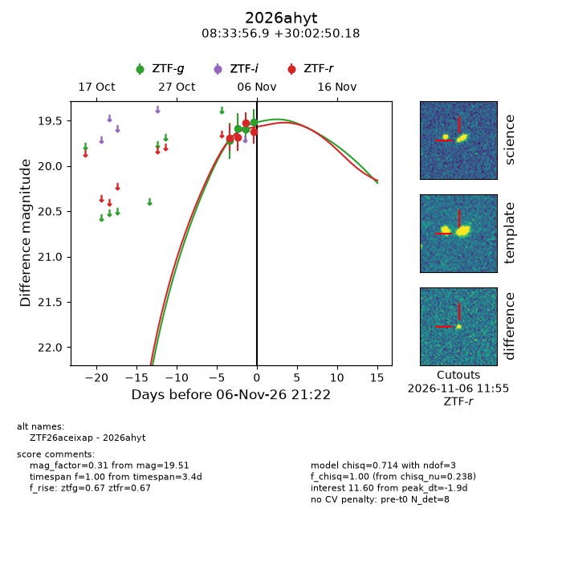
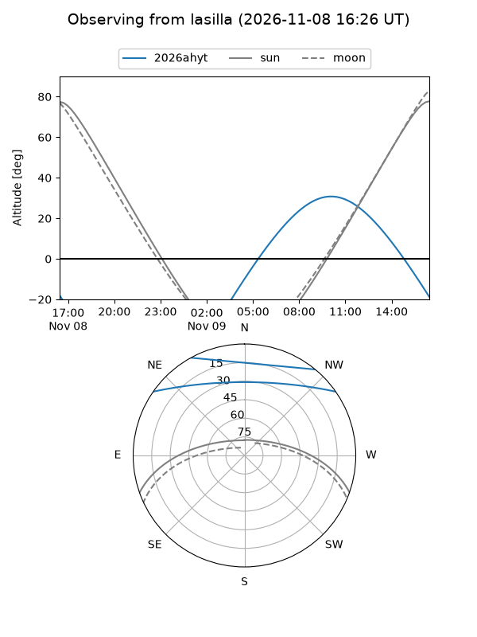
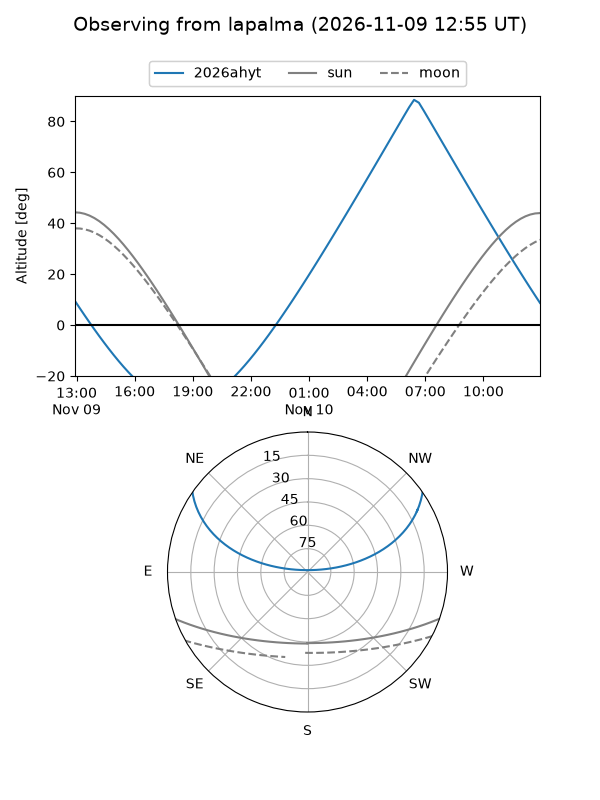
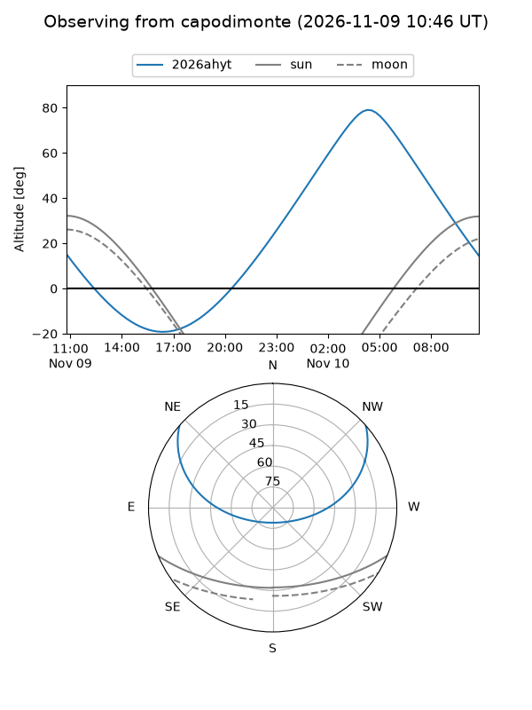
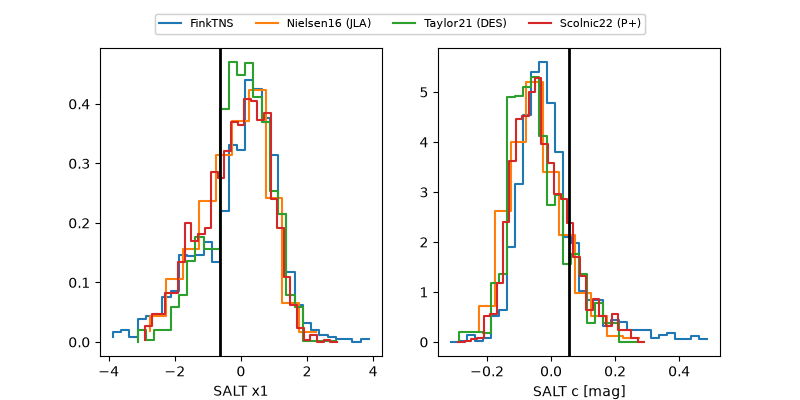

2026ahyt
Target 2026ahyt at 2026-11-06 21:24
Aliases and brokers:
FINK-ZTF: ztf.fink-portal.org/ZTF26aceixap
Lasair-ZTF: lasair-ztf.lsst.ac.uk/objects/ZTF26aceixap
ALeRCE-ZTF: alerce.online/object/ZTF26aceixap
YSE-PZ: ziggy.ucolick.org/yse/transient_detail/2026ahyt
TNS name: wis-tns.org/object/2026ahyt
Direct TNS query: direct search
alt names
ZTF26aceixap (ztf,fink_ztf)
2026ahyt (tns,yse)
Coordinates:
equatorial (ra, dec) = 128.4870,+30.04727
equatorial (HMS+DMS) = 08:33:56.88,+30:02:50.18
galactic (l, b) = (193.5274,+34.16122)
Flags:
peak dt: -1.9
Photometry:
last ztfg=19.51, ztfr=19.62
4 ztfg, 4 ztfr detections
Lightcurve

Visibility



Additional plots
